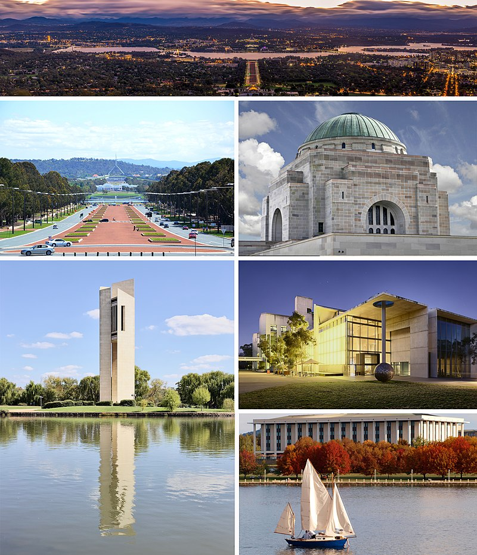

Австралия

Австралия — континент, расположенный в Восточном и Южном полушариях Земли. Вся территория материка является основной частью государства Австралийский Союз. Материк входит в часть света Австралия и Океания
Материк Австралия отделен Бассовым проливом шириной 240 км от о.Тасмания на юго-востоке и Торресовым проливом шириной 145 км от о. Новая Гвинея на северо-востоке. Кратчайшее расстояние от Австралии до Индонезии через Тиморское море 480 км, а до Новой Зеландии через Тасманово море 1930 км.
Австралия простирается на 3180 км с севера на юг и на 4000 км с востока на запад, или от 10°41ў до 43°39ў ю.ш. и от 113°9ў до 153°39ў в.д. Это самый маленький материк: его общая площадь, включая остров Тасманию, составляет 7682,3 тыс. кв. км. Длина береговой линии 36 700 км. На севере глубоко вдается в сушу залив Карпентария, а на юге – Большой Австралийский залив.
Хотя Австралийский материк – один из древнейших в мире, он длительное время был отчленен от других массивов суши и поэтому там сохранились многие уникальные животные, включая различных сумчатых (например, кенгуру и коала) и яйцекладущих (утконос и ехидна).
Вероятно, первопоселенцы Австралии мигрировали с севера 40–60 тыс. лет назад. Европейцы открыли этот материк только в начале 17 в. Англия объявила его своей колонией в 1770. Первое английское поселение было основано в 1788.
Потомки коренных жителей были перемещены в колониальный период в особые районы – резервации, и их численность в настоящее время составляет ок. 375 тыс. человек, или 2% всего населения страны. В настоящее время в Австралии проживает почти 19 млн. человек, из них 72% англо-кельтов, 17% –других европейцев и 6% – азиатов. Около 21% нынешних жителей Австралии не являются уроженцами этой страны и еще 21% – потомки иммигрантов второго поколения, у которых хотя бы один из родителей не был уроженцем этой страны.
Австралия отличается высоким уровнем развития сельского хозяйства и добывающей промышленности и является одним из основных поставщиков угля, золота, пшеницы и железной руды на мировой рынок. Обрабатывающая промышленность тоже весьма развита, но ориентирована преимущественно на внутренний рынок. Австралия импортирует много автомобилей, оборудования (компьютеров, средства связи и др. продуктов химической промышленности).
В Австралии действует федеративная система управления. Общенациональное правительство было создано в 1901 на основе соглашения об образовании федерации шести штатов. Среди них – Новый Южный Уэльс (площадь 801,6 тыс. кв. км), Виктория (227,6 тыс. кв. км), Квинсленд (1727,2 тыс. кв. км), Южная Австралия (984 тыс. кв. км), Западная Австралия (2525,5 тыс. кв. км) и Тасмания (67,8 тыс. кв. км). Имеются также две территории, которые, по конституции, находятся под юрисдикцией центрального правительства, но приобретают все большие права самоуправления, приближаясь к уровню штатов. Это Северная территория (1346,2 тыс. кв. км) и Австралийская столичная территория (2,4 тыс. кв. км), где находится город Канберра – столица страны и резиденция правительства.
Австралии принадлежат Кокосовые острова и остров Рождества в Индийском океане, острова Норфолк, Лорд-Хау и острова Кораллового моря в Тихом океане, острова Херд и Мак-Доналд в приантарктических водах. Австралия владела юго-восточной частью Новой Гвинеи (территория Папуа) и управляла северо-восточной частью этого острова (подопечная территория ООН Новая Гвинея) до 1975, когда обе территории стали независимым государством Папуа – Новая Гвинея. Австралия претендует на земли в Антарктиде общей площадью 6120 тыс. кв. км, что, однако, не признается участниками договора об Антарктике 1961.
Колаж
Красоты Австралии
Географическая история
Множество фактов убеждает в том, что на протяжении большей части геологической истории Австралия вместе с Южной Америкой, Африкой, Антарктидой и Индией входила в состав крупного «суперматерика» Гондвана. Около 160 млн. лет назад Гондвана раскололась на части, и ее фрагменты, ставшие материками, «переместились» на свои нынешние позиции. Таким образом, в течение длительного раннего периода эволюция материка протекала в полном соответствии с развитием других массивов суши Южного полушария.
Западную часть Австралийского материка слагает один из шести древних стабильных щитов Земли, сформировавшийся в конце докембрия (более 570 млн. лет). Здесь представлены изверженные и метаморфические породы докембрийского возраста, частично перекрытые более молодыми песчаниками, сланцами и известняками. В конце докембрия на восточной окраине щита образовался длинный прогиб – Аделаидская геосинклиналь, куда сгружались осадки на протяжении раннего палеозоя. В докембрийское время происходило отложение золотоносных, урановых, марганцевых, железных и других руд.
В начале палеозойской эры (570–225 млн. лет) на месте Аделаидской геосинклинали образовалась цепь гор – ядро хребта Флиндерс, а на месте гор Восточной Австралии сформировалась гораздо большая Тасманская геосинклиналь. В этом прогибе в палеозое накапливались мощные толщи различных осадков, хотя седиментация порой прерывалась локальным горообразованием, сопровождавшимся вулканизмом. Некоторые части щита иногда также подвергались морским трансгрессиям. Пермский период (280–225 млн. лет) имел особое значение, поскольку тогда накапливались мощные пласты угля в бассейнах Боуэн и Сидней и образовалось большинство рудных месторождений Восточной Австралии, содержащих золото, олово, серебро, свинец и медь.
В начале палеозойской эры (570–225 млн. лет) на месте Аделаидской геосинклинали образовалась цепь гор – ядро хребта Флиндерс, а на месте гор Восточной Австралии сформировалась гораздо большая Тасманская геосинклиналь. В этом прогибе в палеозое накапливались мощные толщи различных осадков, хотя седиментация порой прерывалась локальным горообразованием, сопровождавшимся вулканизмом. Некоторые части щита иногда также подвергались морским трансгрессиям. Пермский период (280–225 млн. лет) имел особое значение, поскольку тогда накапливались мощные пласты угля в бассейнах Боуэн и Сидней и образовалось большинство рудных месторождений Восточной Австралии, содержащих золото, олово, серебро, свинец и медь.
В течение мезозойской эры (225–65 млн. лет) на месте палеозойских морских бассейнов поднялись горы Восточной Австралии. Между этой возвышенной сушей на востоке и щитом на западе – там, где сейчас располагаются Центральные низменности, – существовал широкий морской пролив, в котором отлагались мощные толщи переслаивающихся песчаников и сланцев. Незначительное поднятие в юрском периоде (190–135 млн. лет) привело к созданию ряда таких обособленных бассейнов, как Карпентария, Большой Артезианский, Муррейский и Гипсленд. В меловом периоде (135–65 млн. лет) эти низменности и некоторые части щита были затоплены мелководными морскими бассейнами. Мезозойская эра сыграла важную роль, поскольку в то время накопились толщи песчаников, ставшие водоносными горизонтами Большого Артезианского Бассейна, а в других районах – коллекторами нефти и природного газа; тогда же образовались пласты битуминозного угля в бассейнах на востоке материка.
Самые важные события этого периода связаны с колебаниями уровня Мирового океана, обусловленными изменениями объема ледниковых покровов в других частях света. Уровень океана понижался настолько, что устанавливались сухопутные мосты между Австралией, Новой Гвинеей и Тасманией. Он достиг современного положения приблизительно 5000–6000 лет назад. При повышении уровня Мирового океана были затоплены долины многих прибрежных рек, и впоследствии там были созданы лучшие порты Австралии. В четвертичном периоде образовался также величайший в мире Большой Барьерный риф, простирающийся на 2000 км с севера на юг от мыса Йорк вдоль восточного берега Квинсленда. Месторождения бурого угля юго-восточной Виктории и мощные залежи бокситов образовались в третичном периоде.
Природные районы
Облик ландшафтов Австралии в основном определяется обширными монотонными равнинами и плато, менее распространенными волнистыми холмами и расчлененными столовыми плато, а также топкими долинами рек, которые часто совсем пересыхают. В результате геологического развития Австралия оказалась четко разделенной на три неравных физико-географических района. Более половины всей площади материка занимает Западное плато с выровненной поверхностью, выработанной преимущественно в древних гранитных и метаморфических породах. Горы Восточной Австралии, охватывающие шестую часть площади материка, отличаются наиболее разнообразным и пересеченным рельефом. Между этими двумя районами находятся Центральные низменности – широкий открытый коридор площадью ок. 2,6 млн. кв. км, простирающийся от залива Карпентария до залива Спенсер.


{kind=link}